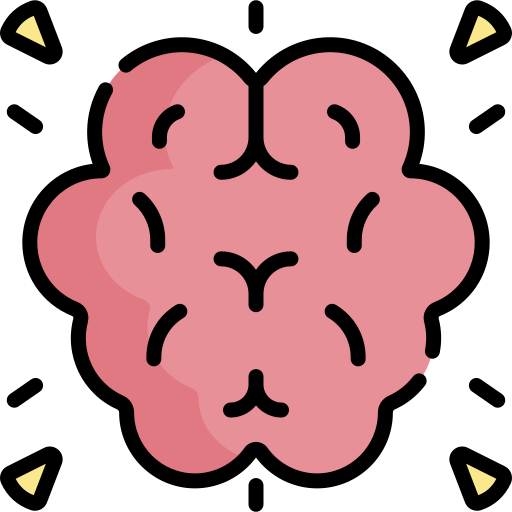
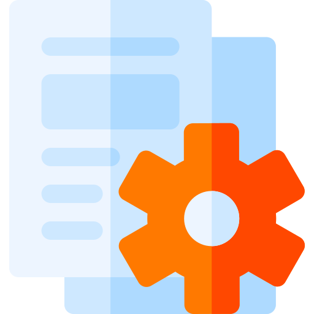
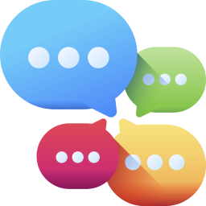
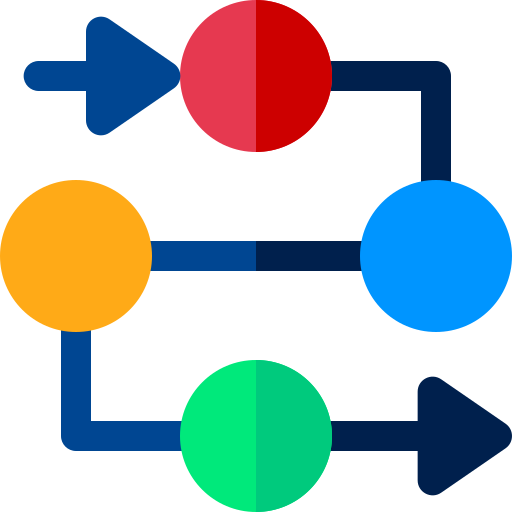

Conheça a NEX
Uma assistente virtual que pode se adaptar a qualquer conhecimento nela insruido
Promevendo vários vantagens para o usuário
Conversar com NEX-

Específico
Entende melhor um assunto de cada vez que é alimentada com mais informações.
-

Mais segura
Funciona de forma privada, assegurando a vericidade dos dadsos.
-

Personalizável
Busca e muda infromaões em tempo real.
-

Intergrável
Pode ser integrada a qualquer sistema empresarial.
-

Útil
Pode ser utilizada para qualquer tipo de tarefa, desde simples a complexas.
-

Modular
Permite adicionar ou remover funcoes conforme a necessidade.